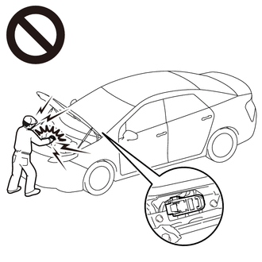
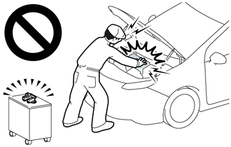
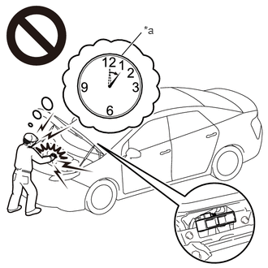
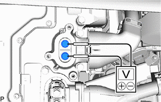
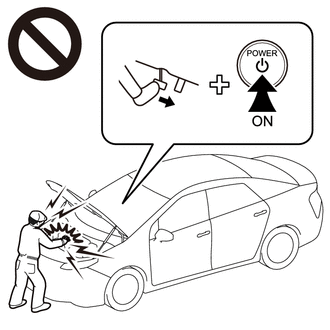
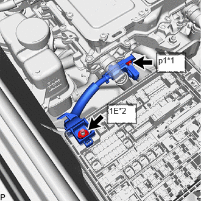
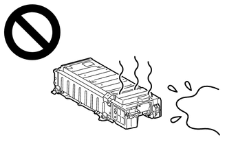
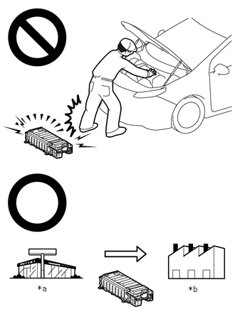
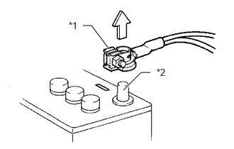

| Last Modified: 10-07-2025 | 6.11:8.1.0 | Doc ID: RM100000002K67K |
| Model Year Start: 2024 | Model: Tacoma HV | Prod Date Range: [03/2024 - ] |
| Title: HYBRID / BATTERY CONTROL: HYBRID CONTROL SYSTEM (w/o 130A Generator): PRECAUTION; 2024 - 2026 MY Tacoma HV [03/2024 - ] | ||
PRECAUTION
PRECAUTIONS FOR INSPECTING HYBRID CONTROL SYSTEM
(a) Before the following operations are conducted, take precautions to prevent electric shock by turning the ignition switch off, wearing insulated gloves, and removing the service plug grip from HV battery.

- Inspecting the high-voltage system.
- Disconnecting the low voltage connector of the hybrid motor control inverter assembly.
- Disconnecting the low voltage connector of the HV battery.
- Disconnecting the low voltage connector of the voltage inverter.
NOTICE:
After removing the service plug grip, turning the ignition switch to ON (READY) may cause a malfunction. Do not turn the ignition switch to ON (READY) unless instructed by the repair manual.
(b) To prevent electric shock, make sure to remove the service plug grip to cut off the high voltage circuit before servicing the vehicle.
(c) After removing the service plug grip, put it in your pocket to prevent other technicians from accidentally reconnecting it while you are working on the high-voltage system.
(d) After removing the service plug grip, wait for at least 10 minutes before touching any of the high-voltage connectors or terminals.
HINT:
Waiting for at least 10 minutes is required to discharge the high-voltage capacitor inside the hybrid motor control inverter assembly.
|
*a |
Without waiting for 10 minutes |
(e) Check the voltage at the terminals in the inspection point of the hybrid motor control inverter assembly.
CAUTION:
Be sure to wear insulated gloves.
(1) Remove the inverter terminal cover from the hybrid motor control inverter assembly.
Click here
![2024 - 2026 MY Tacoma HV [03/2024 - ]; HYBRID / BATTERY CONTROL: INVERTER WITH CONVERTER: REMOVAL](../../../../stylegraphics/info.gif)

NOTICE:
- Do not touch the inverter terminal cover waterproof seal.
- Do not allow any foreign matter or water to enter the hybrid motor control inverter assembly.
(2) Measure the voltage according to the value(s) in the table below.
Standard Voltage:
|
Tester Connection |
Condition |
Specified Condition |
|---|---|---|
|
Inspection point |
At least 10 minutes after removing the service plug grip |
0 V |
HINT:
Make sure to set the tester to DC750 V or more when measuring the voltage.
(3) Reinstall the inverter terminal cover.
(f) When turning the ignition switch ON during an inspection, do not press the ignition switch while depressing the brake pedal.
CAUTION:
Pressing the ignition switch with the brake pedal depressed causes the system to enter the READY-on state. This is very dangerous because high voltage may be applied to the inspection area.
(g) Turn the ignition switch off, disconnect the cable from the negative (-) terminal of the auxiliary battery and put on insulated gloves before touching any of the orange-colored wire harnesses and connectors of the high-voltage system.
(h) Turn the ignition switch off before performing any resistance checks.
(i) Turn the ignition switch off before disconnecting or reconnecting any connectors.
(j) When performing work involving high-voltage wires, use either a tool wrapped with vinyl insulating tape or an insulated tool.
(k) When high-voltage connectors are removed, wrap the connectors with insulation tape to prevent them from contacting foreign matter.
NOTICE FOR HYBRID CONTROL SYSTEM ACTIVATION
(a) When the warning is illuminated, or the auxiliary battery has been disconnected and reconnected, attempting to turn the ignition switch to ON (READY) may not start the system (the system may not enter the READY-on state) on the first attempt. If so, turn the ignition switch off and reattempt to start the hybrid system.
PRECAUTIONS FOR DISCONNECTING AMD TERMINAL
HINT:
The AMD terminal is connected to the positive terminal of the auxiliary battery. To prevent damage when the AMD terminal is being disconnected, use the following procedure.
(a) Be sure to disconnect the cable from the negative (-) auxiliary battery terminal before disconnecting the AMD terminal from the No. 1 engine room relay block and junction block assembly.
|
*1 |
AMD Terminal (Hybrid Motor Control Inverter Assembly Side) |
|
*2 |
AMD Terminal (No. 1 Engine Room Relay Block and Junction Block Assembly Side) |
(b) After disconnecting the AMD terminal, wrap it with vinyl insulating tape.
(c) Be sure to reconnect the AMD terminal to the No. 1 engine room relay block and junction block assembly before reconnecting the cable to the negative (-) terminal of the auxiliary battery.
NOTICE:
A short circuit to ground may occur if the AMD terminal is disconnected before the cable is disconnected from the negative (-) auxiliary battery terminal. If a short circuit to ground occurs, a fusible link or fuse may break.
DISPOSING OF HV BATTERY
(a) When disposing of an HV battery, make sure to return it through an authorized collection agent who is capable of handling it safely. If the HV battery is returned via the manufacturer specified route, it will be returned properly and in a safe manner by an authorized collection agent.
CAUTION:
- After removing the HV battery, keep it away from water. Exposure to water may cause the HV battery to produce heat, resulting in a fire. 
- Accidents such as electric shock may result if
the HV battery is disposed of improperly or
abandoned.
Therefore, make sure to return HV battery through an authorized collection agent.
*a
Dealer
*b
Battery Collection Agent
- To reduce the risk of fire, HV battery must not be stored in an area where they will be exposed to fire or high temperatures.
- If the temperature of the HV battery is high, leave the vehicle until the temperature drops.
- Make sure to insulate the high-voltage connectors
and terminals of the HV battery with insulating tape
after removing them.
If the HV battery stored without insulating the connectors and terminals, electric shock or fire may result.
PRECAUTIONS WHEN REPLACING HYBRID VEHICLE CONTROL ECU
(a) When the hybrid vehicle control ECU is replaced, update the ECU security key.
(b) Before replacing the hybrid vehicle control ECU, refer to Registration.
Click here
PRECAUTIONS FOR DISCONNECTING AND RECONNECTING CABLE TO NEGATIVE (-) AUXILIARY BATTERY TERMINAL
(a) Before performing work on electronic components, disconnect the cable from the negative (-) auxiliary battery terminal to prevent damage to the electrical system or electrical components.
 Negative (-) Auxiliary Battery Terminal|
*1 |
Cable |
|
*2 |
Negative (-) Auxiliary Battery Terminal |
(b) Before disconnecting and reconnecting the auxiliary battery cable, turn the ignition switch off and the headlight switch off. Then loosen the terminal nut completely. Do not damage the cable or terminal.
(c) When the auxiliary battery cable is disconnected, the clock and radio settings and stored DTCs are cleared. Therefore, before disconnecting the auxiliary battery cable, make a note of them.
NOTICE:
- After the ignition switch is turned off, there
may be a waiting time before disconnecting the
negative (-) auxiliary battery terminal.
Click here
- When disconnecting and reconnecting the auxiliary
battery
HINT:
When disconnecting and reconnecting the auxiliary battery, there is an automatic learning function that completes learning when the respective system is used.
Click here